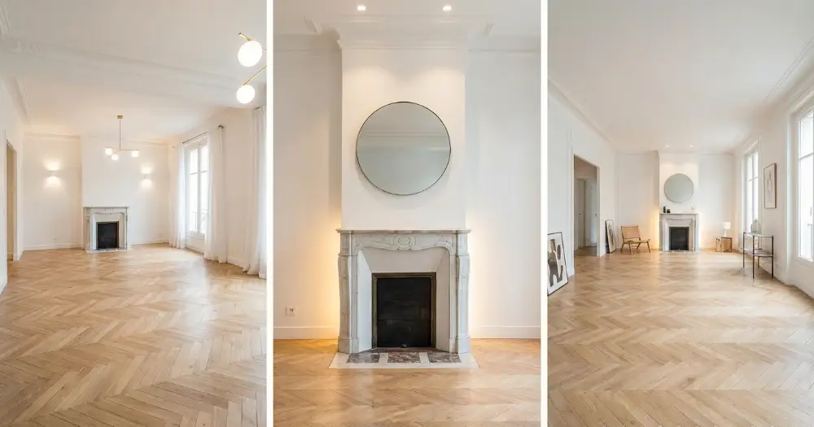

La rénovation d'habitation en Île-de-France représente un investissement majeur qui nécessite une planification minutieuse. En 2026, les prix varient considérablement selon la nature des travaux, la superficie du logement et sa localisation dans la région parisienne. Que vous souhaitiez rafraîchir votre appartement parisien ou entreprendre une rénovation complète de votre maison en banlieue, il est essentiel de connaître les tarifs pratiqués pour établir un budget réaliste. Découvrez dans ce guide complet tous les éléments qui influencent le prix de rénovation d'une habitation en Île-de-France.
Budget indicatif : les montants de ce guide sont des ordres de grandeur, à confirmer après visite. Comparez le périmètre, les fournitures, la TVA et les exclusions du devis ; ils ne constituent pas un tarif ferme.
Facteurs influençant le prix de rénovation en Île-de-France
Le coût d'une rénovation d'habitation en Île-de-France dépend de nombreux critères spécifiques à la région. La localisation géographique joue un rôle déterminant : les prix à Paris intramuros sont généralement 15 à 30% plus élevés qu'en grande couronne. L'âge du bâtiment influence également les tarifs, notamment pour les logements haussmanniens nécessitant des techniques particulières. La superficie constitue un autre facteur clé, avec des économies d'échelle pour les grandes surfaces. L'accessibilité du chantier, particulièrement problématique dans le centre de Paris, peut majorer les coûts de 10 à 20%. Enfin, le standing souhaité et les matériaux choisis déterminent en grande partie l'enveloppe budgétaire finale.
Impact de la localisation sur les prix
Comparez les contraintes réelles du chantier : accès, stationnement, étage, manutention, stockage et évacuation. Deux logements proches peuvent demander des moyens très différents.
Spécificités des logements anciens
Les immeubles haussmanniens et les constructions d'avant 1970 nécessitent souvent des travaux de mise aux normes électriques et de plomberie, augmentant le budget de 20 à 40%.
Grille tarifaire 2026 par type de rénovation
En 2026, les prix de rénovation d'habitation en Île-de-France s'échelonnent selon trois niveaux d'intervention. La rénovation légère (peinture, revêtements, petites réparations) oscille entre 200 et 500€/m² selon les finitions choisies. La rénovation intermédiaire, incluant la cuisine, la salle de bain et quelques cloisons, varie de 600 à 1200€/m². La rénovation lourde avec restructuration complète, mise aux normes et équipements haut de gamme peut atteindre 1500 à 2500€/m². Ces tarifs incluent la main-d'œuvre, les matériaux et les frais annexes spécifiques à la région parisienne comme les contraintes de stationnement et d'évacuation des gravats.
Rénovation par pièce : détail des coûts
Cuisine complète : 8 000 à 25 000€. Salle de bain : 6 000 à 18 000€. Chambre : 3 000 à 8 000€. Salon-séjour : 4 000 à 12 000€ selon la surface.
Spécificités réglementaires en Île-de-France
Les démarches dépendent des travaux et du bâtiment : façade, structure, parties communes et secteur protégé doivent être examinés avant le chantier. Vérifiez les autorisations avec le syndic et le service d’urbanisme selon le projet. Une rénovation intérieure ne doit pas être présentée comme soumise indistinctement aux règles de la construction neuve.
Aides et subventions disponibles
Les possibilités d’aide dépendent de votre logement, de vos ressources et des travaux. Aucun complément régional ne doit être présenté comme automatique. Consultez Service Public : aides et prêts pour les travaux et faites vérifier la situation à l’adresse du chantier.
Optimiser son budget rénovation : conseils d'experts
Pour maîtriser le prix de rénovation d'habitation en Île-de-France, plusieurs stratégies s'avèrent efficaces. Planifier les travaux hors saison (automne-hiver) permet d'obtenir des tarifs préférentiels de 10 à 15%. Grouper les interventions limite les frais de déplacement et d'installation de chantier. Choisir des matériaux de qualité intermédiaire offre un excellent rapport qualité-prix sans compromis sur la durabilité. L'anticipation des contraintes techniques évite les surcoûts : diagnostic préalable complet, vérification de l'état des réseaux, évaluation de la portance des planchers. Enfin, comparer plusieurs devis détaillés permet d'identifier les écarts de prix et de négocier les prestations.
Erreurs courantes à éviter
Sous-estimer les frais annexes (+20% du budget). Négliger l'étude préalable. Choisir uniquement sur le prix sans vérifier les assurances et garanties.
Calendrier optimal des travaux
Éviter mai-juillet (haute saison). Privilégier octobre-février pour les gros œuvre. Prévoir 15-20% de marge sur les délais annoncés.
Choisir le bon professionnel en Île-de-France
La sélection d'une entreprise de rénovation qualifiée constitue un enjeu crucial pour la réussite de votre projet en Île-de-France. Vérifiez les assurances et les références adaptées aux travaux. Pour une aide exigeant une qualification RGE, contrôlez son domaine et sa validité dans l’annuaire officiel. L'expérience locale est déterminante : une entreprise familiarisée avec les spécificités parisiennes (copropriétés, immeubles anciens, contraintes urbaines) optimisera délais et coûts. Exigez des références récentes et n'hésitez pas à visiter des chantiers terminés. La transparence tarifaire, avec un devis détaillé ligne par ligne, témoigne du sérieux du professionnel. Enfin, privilégiez les entreprises proposant des garanties étendues et un service après-vente réactif.
Labels et certifications à rechercher
Vérifiez les assurances, les références et les qualifications correspondant au lot envisagé. Lorsqu’une aide exige une qualification RGE, contrôlez le domaine et la validité dans l’Annuaire officiel des professionnels RGE.
Le prix de rénovation d'habitation en Île-de-France en 2026 nécessite une approche personnalisée tenant compte de vos contraintes spécifiques et de vos objectifs. Avec des tarifs variant de 200 à 2500€/m² selon l'ampleur des travaux, il est essentiel de s'entourer de professionnels expérimentés pour optimiser votre investissement. Mistral Pro Reno, entreprise de rénovation basée à Paris 17ème, vous accompagne dans tous vos projets en Île-de-France avec des devis transparents et des conseils personnalisés. Contactez-nous dès aujourd'hui pour une évaluation gratuite de votre projet.
Questions fréquentes
Quel est le prix moyen au m² pour rénover en Île-de-France en 2026 ?
Le prix varie de 200€/m² pour une rénovation légère à 2500€/m² pour une rénovation lourde, avec une moyenne de 800-1200€/m² pour une rénovation complète.
Les prix sont-ils plus élevés à Paris qu'en banlieue ?
L’accès, les contraintes de copropriété et les prestations peuvent augmenter le budget à Paris. Faites comparer des projets de même périmètre et de même niveau de finition.
Quelles aides financières sont disponibles en 2026 ?
Les dispositifs varient selon les travaux, le logement et les ressources. Consultez France Rénov’ ou Service Public et distinguez les subventions des prêts à rembourser.
Comment obtenir un devis précis pour sa rénovation ?
Préparez un descriptif précis, demandez une visite et comparez des devis avec les mêmes postes, quantités, fournitures et exclusions. Vérifiez les assurances et, si une aide l’exige, la qualification correspondante.
Besoin d'un devis pour votre projet ?
Contactez Mistral Pro Reno pour un devis gratuit et personnalisé.
Obtenir un devis gratuitBesoin d'un devis pour votre projet ?
Obtenez une estimation gratuite en quelques clics avec notre assistant d’estimation.
assistant d’estimation